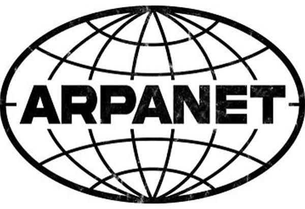

Arpanet är ett närverk som är föregångare till dagens internet Arpanets historia härstammar från den amrekanska fösvarsmakten där idén till internet formuleras 1960. Utvecklingen fortsätter under större delen av 1960 talet Arparet kunde användas till att skicka medelanden över hav och land. Ett test som ledes av professor Leonard Kleinrock skickade iväg ett medelande till en annan dator drygt 50 mil bort. Han skrev LO isttället för LOGIN eftersomd servern kraschade. Arpanet blev viktig för oss eftersom det var först med att kunna skicka medelandet i ”packet” man kan helt enkelt äga att Arpanet är dagens föregångare.

År 1989 skapar Tim Berners den första webbplatsen för forskningcentrumet CERN i Schweiz där WWW utvecklades. Tim Berners jobbade åt Cern ett företag som forskade inom denna teknik. Till slut blev WWW tillgängligt för hela värden och WWW tog värden med storm. Detta gjorde det möjligt att ha det internet vi har idag.
Den första webb sidan som WWW använde var info.cern.ch som skapades av Tim Berners ungifär samtidigt som han skapade WWW den innehöll information om deras upptäckter när de skapade WWW och alla grunder. Tim Berners skapade info.Cern.ch när World Wide Webb blev tillgänglig för allmänheten.
År 1991 kom den första webbläsaren som hette W punkt den döptes senare om till Nexu för att inte misstas med WWW. 1993 kommer Mosaic som var först med att kunna visa bilder tillsammans med text. Den var skapad av University of Illinois National center of Supercomputing Applikations.